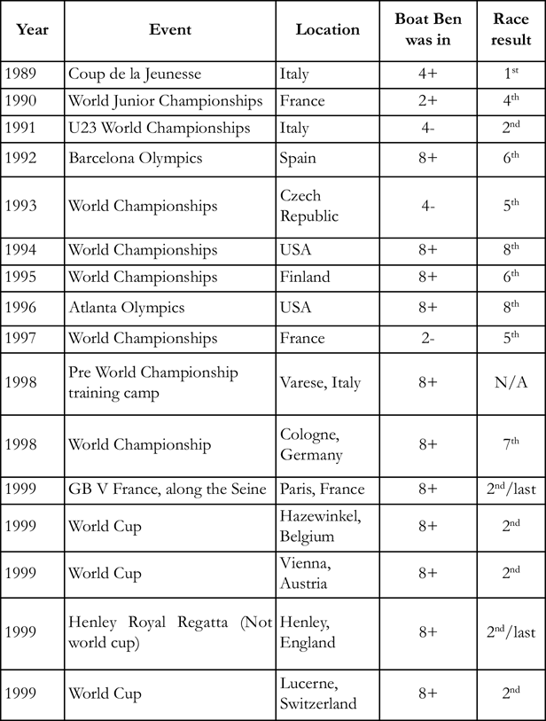
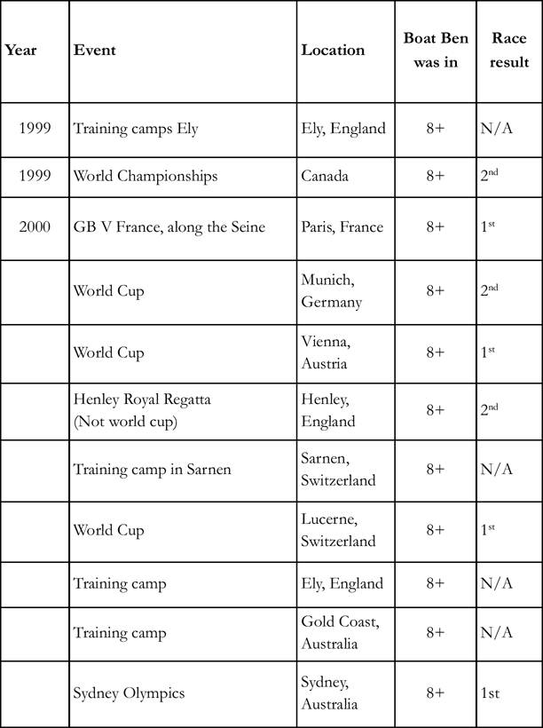

Chronologys
The numbers in the boat column refers to the number of oarsmen so “8” is the eight and “2” would be the pair. The plus or minus sign refers to whether the boat has a cox “+” or is coxless “-” .

